Nu zijn we aangekomen bij de wapens.
De naam van het spel zegt het al, Modern Warfare is een spel gebaseerd op de werkelijkheid op dit moment, dus alle wapens die hier staan bestaan in het echt en worden ook vandaag de dag gebruikt.
Alle wapens hebben ook een gunsmith, wat nieuw is in de call of duty franchise.
In deze gunsmith kan je attatchments toevoegen aan de wapens om ze beter te maken.
De dingen die je kan toevoegen zijn: muzzles, barrels, scopes/optics, stocks, rear grip, magazine, underbarrels, lasers (als in een laser lampje om te richten) en perks.
Assault Rifles (AR's)

De Kilo 141 is jouw beginners assault rifle en is daarmee niet de beste.
Het is een full-auto rifle, net als de meeste wapens in de assualt rifle class, en draagt de titel Alpha.
Het wapen heeft een damage van 73, een fire rate van 73 en 61 mobility.
Over het algemeen is het een goede rifle om mee te starten maar zodra je meer levels omhoog gaat, krijg je steeds betere wapens.

De Fal is een semi auto wapen wat inhoud dat je telkens als je de trigger indrukt maar 1 schot schiet (er is ovverigens wel een perk wat ervoor zorgt dat het wapen burst word).
Het is de 2e rifle die je unlockt en draagt de titel Bravo.
Het wapen doet 79 damage, heeft een fire rate van 59, en heeft een mobility van 60.

De M4A1 staat bekend als de beste assault rifle in de game.
Het wapen draagt de titel Charlie en was in de vroege dagen van modern warfare erg overpowerd.
Ondanks dat het wapen meerdere keren generfed werd (slechter gemaakt), is het nog steeds by far de beste in zijn class.
De M4A1 heeft 72 damage, een fire rate van wel liefst 75 en een mobility van 63.

De FR 5.56 is het enige wapen wat standaart een burst wapen is.
Dit wapen heeft de titel Delta en werd in eerdere call of duty games ook wel de Famas genoemd.
Je ontgrendeld de FR 5.56 op level 16 en het opmerkelijke aan dit wapen is dat het magazijn achter de trigger zit, dit zorgt voor meer mobility en dat de barrel langer word voor meer accuratie.
In het spel word echter de mobility er niet beter op, deze is namelijk 58.
De damage van dit wapen is 62 en de fire rate is 72.

De Oden staat bekend als de slechtste assault rifle in het spel.
Ook dit wapen heeft het magazijn achter de trigger, het wapen word ontgrendeld op level 28 en heeft de titel Echo.
De reden waarom dit wapen zo slecht is, is vanwege de combinatie van een slechte fire rate en van slechte control.
De slechte fire rate van 58 compenseert met een super hoge damage van 79, maar de control van dit wapen is heel slecht, dit betekend dat als je schiet, dat jouw geweer alle kanten op schiet.
De mobility van dit wapen is ook niet al te best, namelijk 56.

De M13 is de op één na beste assault rifle door z'n hoge fire rate en control.
Dit wapen word ontgrendeld op level 39 en draagt de titel Foxtrot.
Het wapen is goed door zijn standaart lage recoil wat het makkelijkt maakt om accuraat te zijn.
Het wapen heeft de damage van 71 en de hoogste fire rate van de assault rifles, namelijk wel 77!
Ook heeft het wapen een mobility van 62.

De FN Scar 17, ookwel de Scar genoemd, wijkt erg af in deze lijst qua kleur.
Dit wapen draagt de naam Golf en word ontgrendeld op level 47.
De damage van de Scar is best goed, namelijk 76 alleen dit wapen heeft de slechtste control van de assault rifle class.
Ook de mobility is erg slecht, namelijk 57, en de fire rate is 63.
Dit wapen is niet een van de beste maar als je leert omgaan met de recoil kan je flinke damage doen.

Het laatste wapen in deze class is een klassieker, namelijk de AK-47.
Dit wapen komt veel voor in de campaign en word daar gebruikt door zowel de Russische troepen (het wapen komt ook uit Rusland) als door de Al Quatala.
De Ak word ontgrendeld op level 58 en draagt de titel Hotel.
De damage is erg goed, namelijk 76 en de fire rate is 61.
De mobility is alleen iets minder goed, naemlijk 59, maar dit wapen heeft meer control dan de Scar.
Sub Machine Guns (SMG's)

De eerste SMG die je krijgt is de AUG, en dit wapen ziet er zeker apart uit.
Bij de AUG zit het magazijn achter de trigger en de stock (de achterkant) is volledig opgevuld.
Dit wapen draagt de titel Alpha en heeft een damage van 70, een fire rate van 72 en de mobility van 65.
In eerdere cod spellen was de aug een assault rifle/LMG maar in dit spel dus een SMG.
Je kan met de gunsmith wel de AUG ombouwen tot een burts assault rifle met een sniper scope, die is erg leuk om te gebruiken, zeker in hardcore.

De P90 word ook ontgrendeld bij level 1 en dit wapen is beter dan de AUG.
Dit wapen komt uit België en is ontworpen voor de Special Forces.
De P90 is erg uniek want het magazijn zit in plaats van onder het wapen er boven op en zorgt daarmee voor veel mobility en ook hier is de stock volledig opgevuld.
Dit wapen draagt de titel bravo en heeft de fire rate van 78, 65 damage en een mibility van 70.

De MP5 is mijn favoriete wapen in de game.
Dit wapen was ook in de vroege dagen van de game overpowerd, op dit moment is hij gelijk aan de andere SMG's maar toch blijft het de favoriet van veel spelers.
De MP5 draagt de tiel Charlie en heeft de damage van 69 en de fire rate van 75.
De reden waarom dit wapen zo geliefd is, is vanwege de hoge mobility (73) en vanwege de handeling: het wapen heeft weinig recoil en is daarmee erg accuraat.

De Uzi één van de twee wapens in de SMG class waarbij het magazijn in de grip zit.
Dit zorgt voor hoge mobility, namelijk 78 en het uiterlijk van een pistol terwijl het wapen gewoon volledig automatisch is.
De Uzi draagt de titel Delta en heeft een fire rate van 64, en een damage van 70.
In de oude Modern Warfare had je ook de Uzi alleen heette die toen de Mini Uzi met een foregrip een geen stock.
Die kan je ook maken in de gunsmith en is erg leuk om te gebruiken.

De PP19 Bizon heeft ook een uniek uiterlijk.
Dit is de enige SMG die een Drum Mag heeft (een rond magazijn) en dat zorgt voor minder mobility maar super veel kogels.
De Bizon draagt de titel Echo en heeft een damage van 72 en een fire rate van 67.
Zoals ik al zei, de mobility is wat minder, namelijk 68 en een ander nadeel van de Drum Mag is dat je in de gunsmith er geen foregrip op kan zetten.
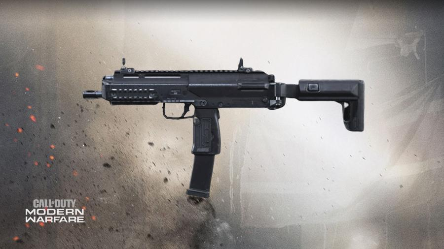
De laatste SMG is de MP7 die ontgrendeld word op level 54.
Dit is de andere SMG waarbij het magazijn in de grip zit, en het wapen draagt de titel Foxtrot.
De MP7 is erg bijzonder qua statistieken, de damage is namelijk vrij laag: 64, maar er zijn andere dingen die die weer compenseren.
Het wapen heeft de fire rate van wel 79 en heeft daarmee de hoogste fire rate in de SMG class.
Ook de mobility is hoog met 75 en dit wapen heeft een super control met amper recoil.
Shotguns:
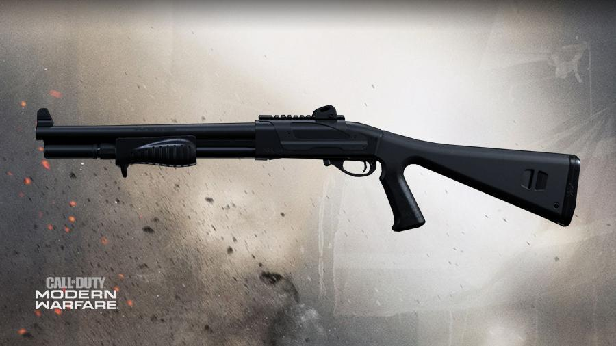
De eerste shotgun die je in handen krijgt is de Model 680.
Deze shotgun is een Pump-Action shotgun, wat inhoud dat als je 1 schot schiet, je de foregrip naar achter moet halen om een nieuwe kogel in de loop te leggen en de andere eruit te gooien, dit moet je bij elk schot doen.
De pump action is erg langzaam maar dat comnpenseert weer met super hoge damage, namelijk 82.
De Model 680 heeft de titel Alpha en over het algemeen hebben shotguns slechte range maar deze heeft de beste van zijn class.
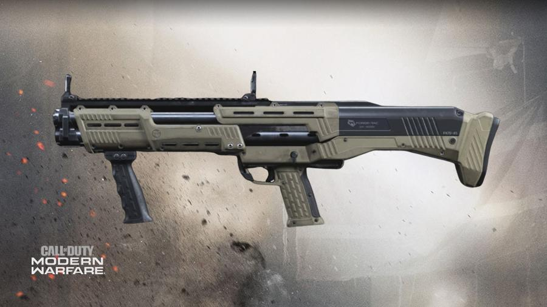
De R9-0 Shotgun ziet er zeker uniek uit en heeft ook een unieke handeling.
Deze shotgun is ook een Pump-Action shotgun, alleen in plaats van om het schot de foregrip naar achter te halen, moet dat bij dit wapen om de 2 schoten.
Als je de foregrip naar achter haalt, laad je gelijk 2 schoten die je vervolgens achter elkaar kan schieten.
De R9-0 draagt de titel Bravo en heeft een damage van 79 en een mobility van 71.
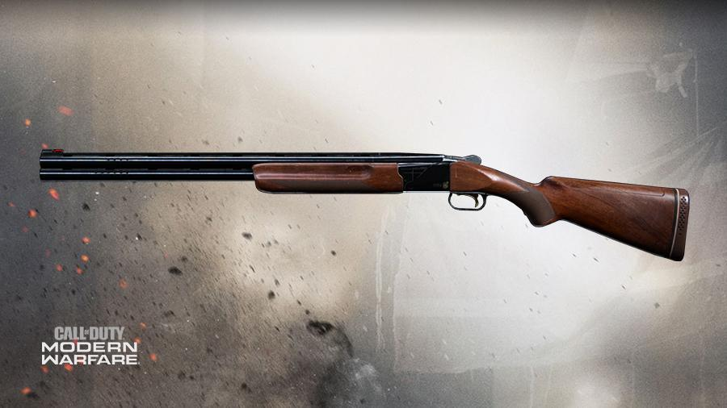
De 725 is een ouderwetse semi-auto shotgun die om de 2 schoten moet reloaden.
Dit wapen was in de vroege dagen van Modern Warfare super overpowerd, er was namelijk een attachment die de shotgun kogels verplaatste voor normale kogels, wat ervoor zorgde dat deze shotgun veranderde in een sniper die mensen met 1 kogel kon killen van 500+ meter afstand!
Nu is hij ziet meer zo goed maar hij doet wel de meeste damage van zijn class, namelijk 85.
Ook heeft hij de mobility van 62 en helaas een lange reload animatie waardoor mensen vaak deze shotgun overslaan.
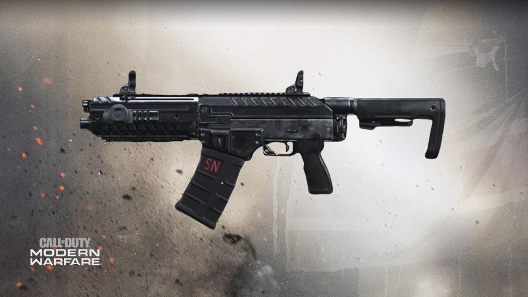
De laatste shotgun is de Origin 12, ook wel bekend als de Brecci van dit spel (spam shotgun).
Voor de mensen die cod Black Ops 3 niet gespeeld hebben, de Brecci was, en is nog steeds een overpowerde semi-auto shotgun waarbij je gewoon je trigger hoefte te spammen en je won automatisch een potje.
Gelukkig is de Origin 12 niet zó goed maar het wel een vervelend wapen om tegen te spelen.
Dit wapen draagt de titel Delta en bevat veel kogels en doet 76 damage.
Dit wapen heeft wel de slechtste range maar een mobilityu van 76.
Meestal wordt de Origin 12 gebruikt door mensen waarvan hun brein gesmolten is, en is ook niet geliefd onder de cod community.
Light Machine Guns (LMG's)
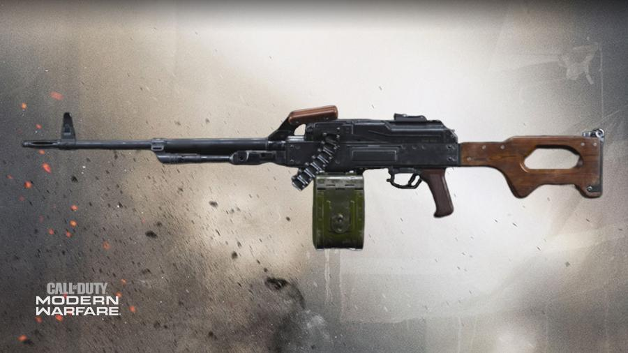
LMG's zijn wapens met een lage mobility meer met veel Ammo.
De eerste die je krijgt is de PKM die de titel: Alpha draagt.
Dit wapen heeft de hoogste damage: 77 en een fire rate van 68.
De mobility is net als bij de andere LMG's slecht, namelijk 50.
Een leuk detail bij de LMG's is dat je als jouw wapen bijna leeg is, je kogels in de ammo strap ook ziet verdwijnen.
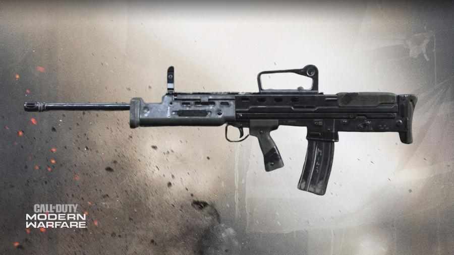
De SA87 ziet er meer uit als een assualt rifle maar ook dit is een LMG.
Het wapen heeft de titel bravo en heeft het magazijn achter de trigger zitten.
Je zou denken dat doordat een normaal magazijn onder zit, dat de mobility veel beter zou zijn, maar dat is helaas niet het geval.
De mobility is namelijk 53 en de damage is 74.
De SA87 heeft een fire rate van 64 en omdat er niet echt voordelen zitten aan dit wapen vergeleken met de rest van de LMG's, word dit wapen vaak overgeslagen.
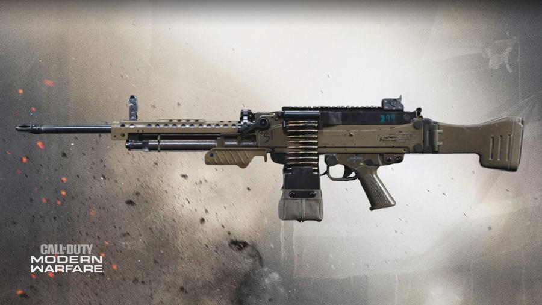
De M91 is de meest moderne LMG op deze lijst.
Dit wapen is gebaseert op de Heckler en Koch MG5 en draagt de titel Charlie.
Je ontgrendeld de M91 op level 25 en deze LMG heeft ook een slechte mobility, namelijk 51.
Hij heeft wel hoge damage, namelijk 77 en de fire rate is 66.
Deze LMG heeft wel de beste range van zijn class en is over het algemeen erg stabiel.
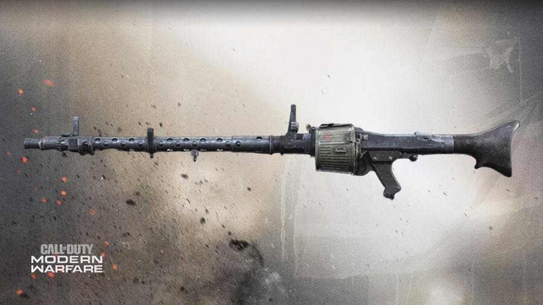
En de laatste LMG van dit lijstje is de MG34.
Dit wapen werd gebruikt in de tweede wereldoorlog door de Duitsers, en wordt tot vandaag de dag nog gebruikt in het leger.
De MG34 draagt de titel Delta en heeft de Drum Mag aan de zijkant van het wapen.
Het wapen heeft de damage van 77 en een fire rate van 70.
Helaas het de MG34 de slechtste mobility van zijn class, namelijk 48.
Veel mensen skippen dit wapen maar als je ermee leert omgaan kan hij bijzonder goed zijn.
Marksman Rifles:
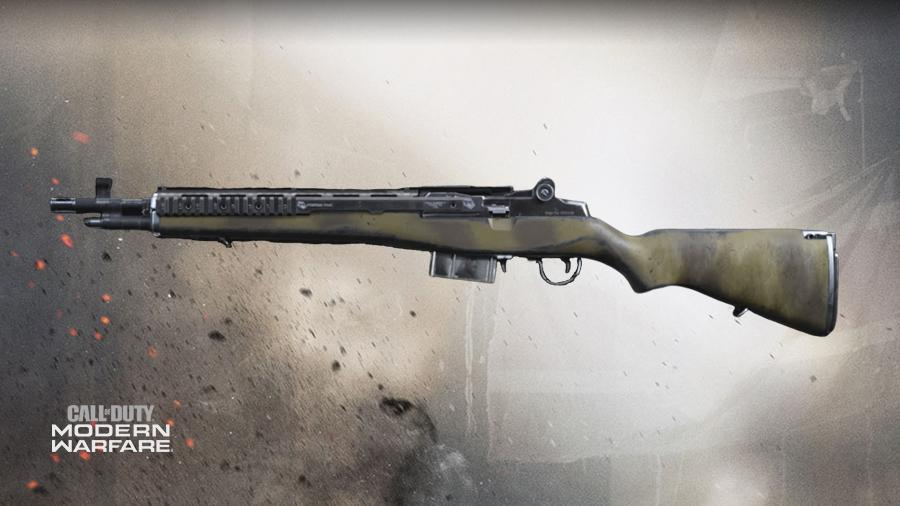
Marksman rifles zijn wapens die tussen de assault rifles en de snipers in zitten, en de eerste die je krijgt is de EBR-14.
Dit is een semi-auto rifle en de EBR draagt de titel Alpha.
Eigelijk is dit wapen een moderne versie van de M1 Garand die in de tweede wereldoorlog werd gebruikt.
De damage van dit wapen is 76 en omdat dit wapen net geen sniper is maar wel semi-auto kost het meestal 3 schoten om iemand te killen.
De mobility van de EBR is 58 en de fire rate is 57.
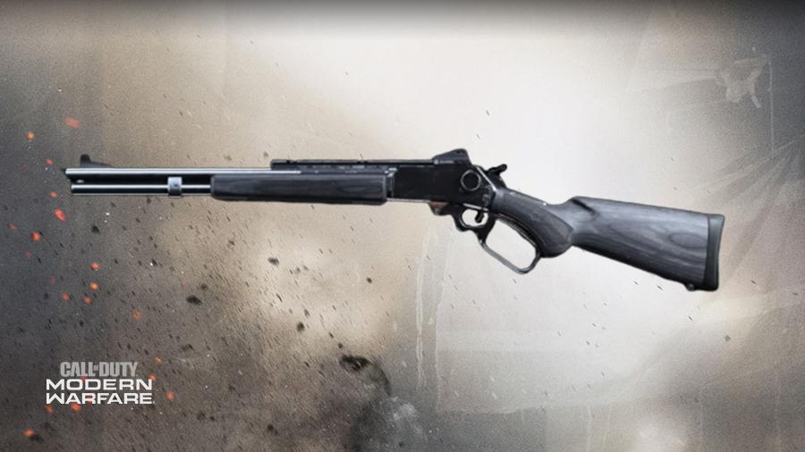
De MK2 Carbine is een lever action rifle.
Dit betekend dat als je een kogel hebt geschoten, je de lever die onder jouw grip dit naar voren moet halen om te recamberen, dit is vergelijkbaar met de Model 680 shotgun.
Dit wapen is normaal een 2 shot kill, maar als je op het hoofd of de torso mikt,
is het een 1 shot kill.
De damage van de Carbine is 80, de mobility is 66 en het wapen heeft de fire rate van 45.
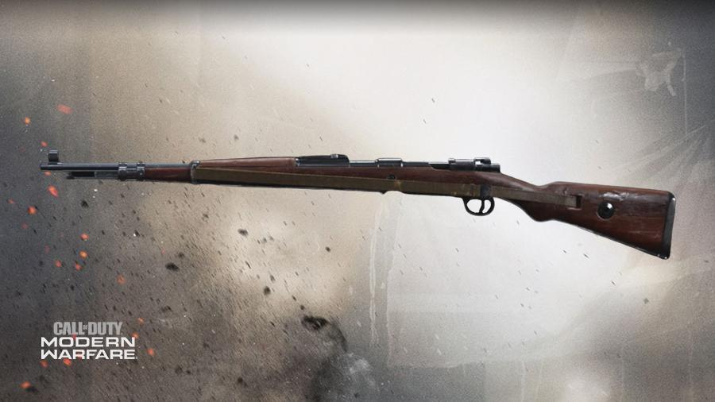
De laatste marksman rifle is de Kar98k die wederom in de tweede wereldoorlog werd gebruikt.
Dit wapen is een bolt-action sniper, wat inhoud dat je om het shot moet recamberen met een hendel aan de zijkant van het wapen, en de Kar draagt de titel Charlie.
De rifle kan met zijn 82 damage vanaf hoger dan de buik met 1 schot iemand killen.
De Kar heeft een sniper scope als attachment en is met de mobility van 53 ideaal om aggressief te snipen.
Sniper Rifles:
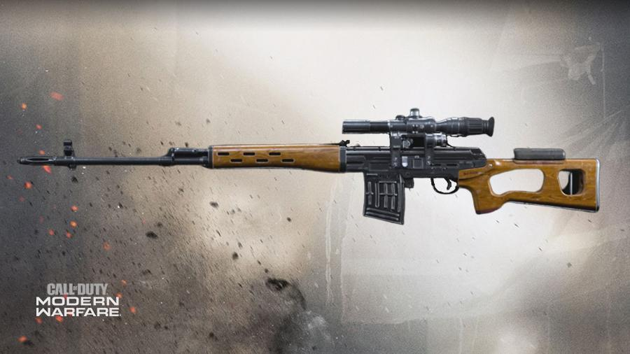
De eerste sniper die je in handen krijgt is ook gelijk de slechtste, namelijk de Dragunov.
Je zou denken dat alle sniper 1 shot kill
wapens zijn maar dat is niet het geval bij dit wapen.
De Dragunov draagt die titel alpha en heeft de lage damage van 78.
Het wapen is semi-auto en heeft een fire rate van 47 en ook een mobility van 47.
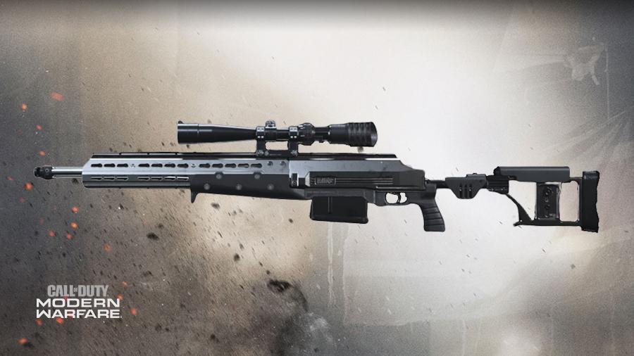
De HDR is een bolt-action sniper die ontgrendeld word op level 11.
Dit wapen is gelukkig wel een 1 shot kill,maakt niet uit waar je iemand raakt, en draagt de titel Bravo.
De HDR heeft een damage van 86 en een fire rate van 83.
Ook heeft dit wapen een mobility van 43.
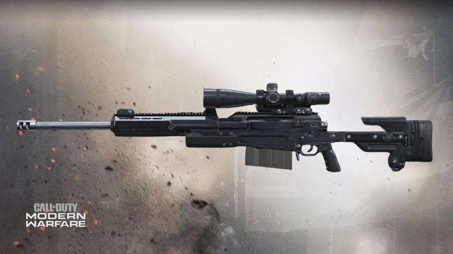
De laatste Sniper is de AX-50, die ontgrendeld word op level 37.
Meestal moeten mensen kiezen tussen de HDR en dit wapen, want er zit veel nerschil tussen de twee.
De HDR heeft meer range dan de AX-50 maar die heeft weer meer mobility dan de HDR.
De AX-50 heeft namelijk de damage van 85 en de mobility van 44.
Dus als je wilt gaan voor range ga je voor de HDR en als je meer mobility wilt ga je voor de AX-50.
Pistols:
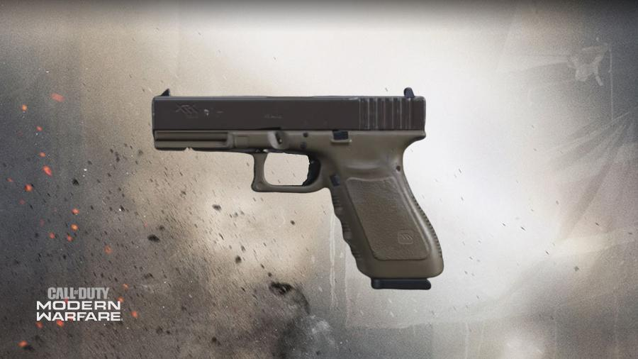
Als je in een cod game op driehoekje of op Y drukt, switch je naar jouw sidearm, deze sidearms bestaan uit pistols.
De eerste pistol die je krijgt is de X16, die de titel alfa draagt.
Dit wapen heeft een damage van 57 en een fire rate van 58.
In het echt staat dit wapen bekend als de Glock, die veel gebruikt word in het leger.
Ook werd de X16 gebruikt in de oude warzone als wapen waarmee je spawnde, waardoor dit wapen niet erg geliefd werd.
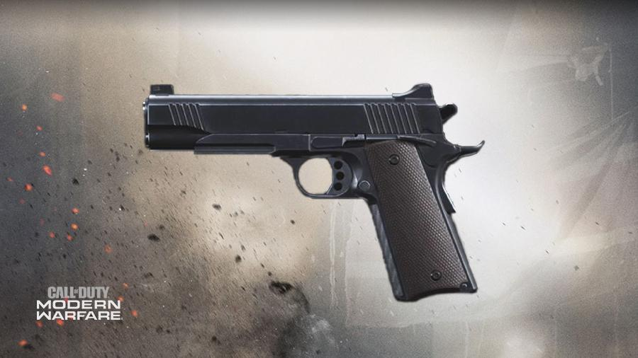
De 1911 is een klassieker en is erg geliefd door het geluid maar ook de satisfying reload animatie.
Dit wapen komt oorspronkelijk uit de Verenigde Staten en werd in de eerste wereldoorlog gebruikt.
In de game draagt de pistol de titel Bravo en heeft de damage van 59.
De 1911 heeft de fire rate van 55 en heeft de meeste range van zijn class.
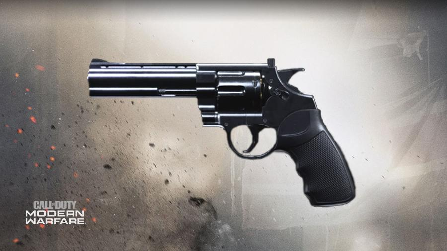
De .357 is een moderne revolver met 6 kogels in één magazijn.
De pistol word ontgrendeld op level 21 en draagt de titel Charlie.
Aan het begin van Modern Warfare was ook deze pistol broken, er is namelijk een attatchment die in plaats van normale kogels, shotgun kogels in het wapen laad.
Gelukkig hebben ze het nu aangepast en is de attatchment niet meer zo goed.
De .357 heeft een damage van 63 en een fire rate van 44.
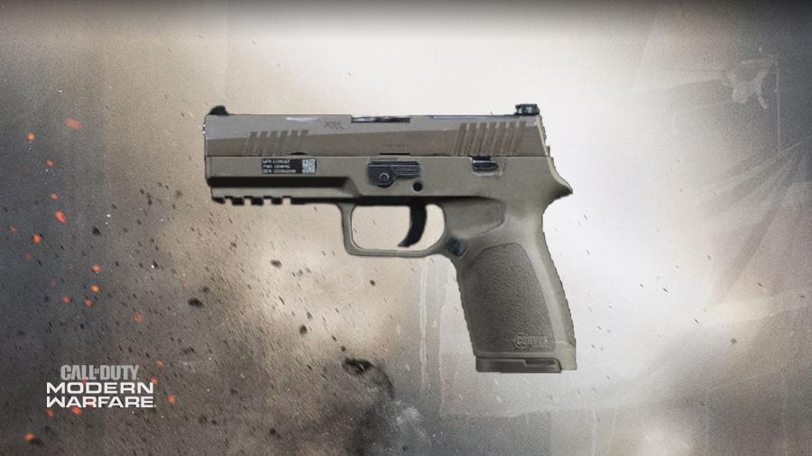
De M19 is de pistol met de hoogste fire rate en mobility van zijn class.
De pistol draagt de titel Delta en wordt ontgrendeld op level 37.
Het wapen heeft een damage van 55 en een fire rate van 60.
Net als bij alle andere pistols is er een attatchment die je kan equippen genaamd Akimbo.
Deze perk zorgt ervoor dat je in plaats van 1 pistol in jouw handen hebt, er in elke hand 1 zit.
Nu ben je winder accuraat maar heb je wel een 2x zo hoge fire rate.
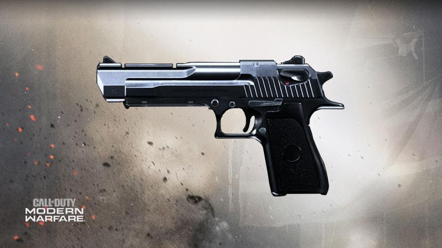
De laatste pistol is de .50 GS.
Dit is een handgun met super hoge damage, namelijk wel 65!
Dit gaat ten koste van de fire rate en control maar als je een goede aim hebt is dit wapen de beste in zijn class.
De .50 GS, in eerdere games ook wel de Desert Eagle genoemd, wordt ontgrendeld op level 52 en draagt de titel Echo.
Het wapen heeft een fire rate van 53 en een mobility van 77.